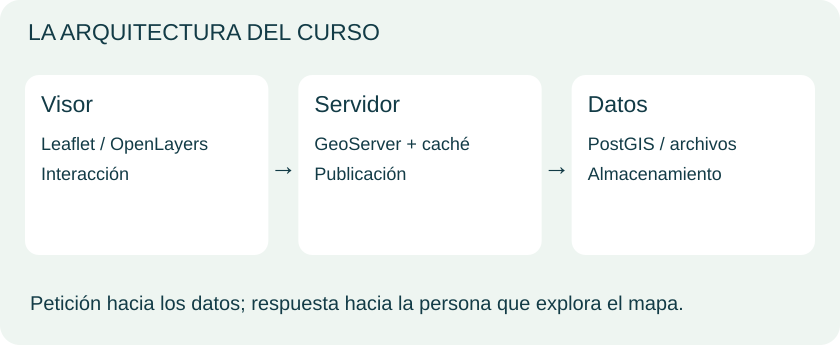
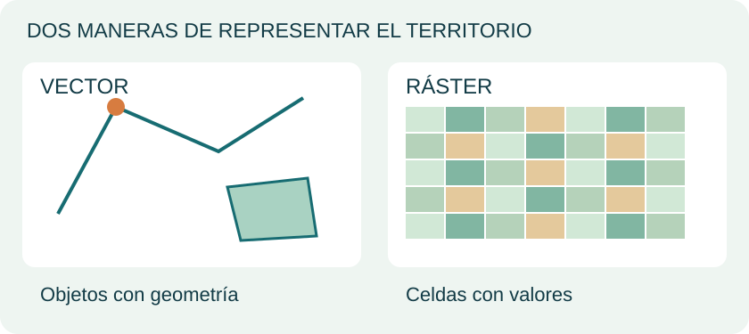
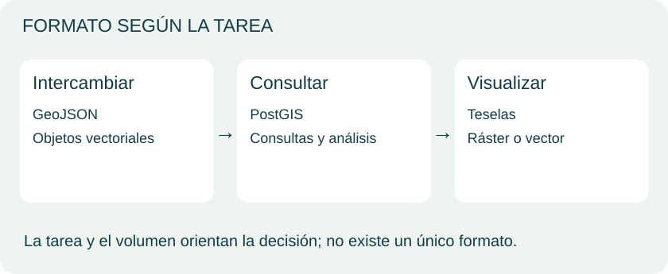

Unidad 1 · Del dato al mapa web
Un mapa es la parte visible.
Descubre lo que hay detrás.
Aprende a conectar datos, servicios y una interfaz para convertir información geográfica en una experiencia que se puede explorar.
Ruta: comprender → visualizar → elegir → aplicar.
Esta muestra reorganiza los temas del material de MappingGIS y añade explicaciones originales. Meta: poder dibujar una arquitectura sencilla y justificar cómo publicar tus datos.
1. La idea en una imagen
Una aplicación de webmapping permite explorar información geográfica desde el navegador. Puede combinar un mapa base, capas temáticas, controles y fichas de información.
2. El recorrido de una petición

Imagina un visor de bibliotecas: al mover el mapa, la aplicación puede solicitar información para la zona visible.
Presenta el mapa y recibe acciones.
Recibe peticiones y publica capas.
Conserva geometrías y atributos.
- El visor solicita una capa o una zona.
- El servidor obtiene los datos necesarios.
- Devuelve imágenes de mapa o entidades geográficas, según el servicio.
- El navegador muestra el resultado y permite interactuar.
¿Pedir una imagen o pedir objetos?
| Necesidad | Servicio | Qué recibes |
|---|---|---|
| Mostrar cartografía con el estilo del servidor | WMS | Imágenes georreferenciadas del mapa |
| Obtener geometrías y atributos para trabajar con entidades | WFS | Entidades geográficas; formatos según el servidor |
WMS también puede ofrecer consultas de información con GetFeatureInfo; eso no lo convierte en un servicio de descarga vectorial. Referencias: OGC WMS y OGC WFS.
Referencia: OGC · WMS · OGC · WFS.
3. Elegir cómo guardar y entregar los datos
Vector y ráster

Elegir según la tarea

Vector: objetos con geometría (puntos, líneas, polígonos). Ráster: celdas o píxeles (imágenes, elevación). Antes de elegir, pregunta: ¿quiero analizar, intercambiar o visualizar?
Texto fácil de inspeccionar; útil para capas vectoriales pequeñas.
PostGIS: base de datos espacial cliente-servidor. GeoPackage: contenedor en un archivo SQLite.
Contenedor SQLite para teselas ráster o vectoriales; requiere un mecanismo de publicación compatible.
| Caso | Punto de partida | Pregunta que falta resolver |
|---|---|---|
| 30 bibliotecas con nombre y horario | GeoJSON | ¿Cuánto pesa la descarga? |
| Millones de registros que varias personas consultan | PostGIS | ¿Qué índices, filtros y permisos necesitas? |
| Datos portátiles para trabajo local | GeoPackage | ¿Qué herramientas lo van a leer? |
| Ortofotos para explorar rápidamente | Teselas ráster, eventualmente MBTiles | ¿Necesitas visualizar o analizar los píxeles originales? |
| Mapa base con estilo en el cliente | Teselas vectoriales | ¿Cómo gestionarás el estilo y la distribución? |
Matices útiles: un archivo binario también se puede transmitir por la web. GeoJSON se puede filtrar después de cargarlo; el formato por sí solo no ofrece un servidor de consultas. Las teselas vectoriales necesitan un estilo para representarse. Para analizar imágenes originales puede convenir conservar GeoTIFF, en lugar de trabajar únicamente con teselas.
Leer un punto en GeoJSON
{
"type": "Feature",
"geometry": {"type": "Point", "coordinates": [-70.65, -33.45]},
"properties": {"nombre": "Biblioteca de ejemplo"}
}
Ejemplo ficticio. En GeoJSON conforme a RFC 7946, las coordenadas se expresan como longitud, latitud en grados. La geometría responde «dónde» y properties responde «qué sabemos». Consulta RFC 7946 y la especificación MBTiles.
Referencia: IETF · RFC 7946 (GeoJSON) · MBTiles · especificación.
4. Cómo llegamos hasta aqué
| Etapa | Cambio que ayuda a entender el curso |
|---|---|
| Redes e informática geográfica | Se desarrollan las bases de la comunicación y del SIG digital. Internet y la Web son conceptos distintos. |
| Web y primeros visores | La cartografía llega al navegador y se consolida el modelo cliente-servidor. |
| Mapas interactivos y móviles | Las teselas, los gestos y las bibliotecas facilitan explorar mapas. |
| Aplicaciones y paneles | El mapa se combina con filtros, indicadores y otras vistas de los datos. |
Esta es una síntesis conceptual de la evolución presentada en el curso, no una cronología exhaustiva de lanzamientos.
5. Construir por componentes o usar una plataforma
| Enfoque | Qué te aporta | Qué debes evaluar |
|---|---|---|
| Componentes independientes | Control sobre visor, servidor y almacenamiento | Instalación, integración y mantenimiento |
| Paquete integrado / IDE | Componentes coordinados para publicar y compartir | Actualizaciones, documentación y compatibilidad |
| Plataforma alojada | Infraestructura gestionada para publicar | Costos, límites, portabilidad y condiciones de uso |
El software libre permite inspeccionar y adaptar el código, pero sigue requiriendo recursos de operación. No hay un ganador universal de rendimiento: depende de los datos, las consultas y la configuración. El navegador amplía el acceso; el SIG de escritorio conserva su papel en edición y análisis especializado.
Lista de requisitos para un proyecto: formatos y proyecciones, leyendas, consultas, edición cuando se necesite, autenticación, permisos, accesibilidad y estándares. Leaflet es una biblioteca del visor, no una plataforma completa: documentación oficial.
Referencia: Leaflet · guía oficial.
6. Tu mapa mental de la unidad
Recuerda: formato no es servicio; biblioteca no es servidor; publicar no es lo mismo que analizar.
7. Preparación para las unidades prácticas
Esta unidad establece los conceptos; la práctica original comienza en la Unidad 2. No necesitas instalar un servidor para comprender el recorrido dato → servicio → visor.
Al pasar a la Unidad 2, conserva el paquete de archivos del curso y prepara PostgreSQL/PostGIS, pgAdmin y QGIS siguiendo sus instrucciones. La base world y sus capas se reutilizan en las unidades siguientes.
| Componente del curso | Se prepara en | Se reutiliza en |
|---|---|---|
Base world, países, ciudades y ríos |
Unidad 2 | GeoServer y visores |
Espacio earth y servicios de mapas |
Unidad 3 | Caché, Leaflet, OpenLayers y MapStore |
Grupo worldgroup y teselas |
Unidades 3–4 | Visores web |
| HTML, CSS y JavaScript | Unidad 5 | OpenLayers y proyecto final |
Un archivo GeoJSON no es una conexión WFS; un WMS dibuja datos que permanecen en el servidor. Esa distinción permite reconocer qué estás configurando en cada paso posterior.
Fuentes y alcance
- Base temática: material de la Unidad 1 de MappingGIS, consultado localmente. Las explicaciones, la ilustración de esta propuesta son originales; no se reproducen diapositivas.
- Ampliación técnica: OGC WMS, OGC WFS, RFC 7946, MBTiles y Leaflet. Consultadas el 24 de octubre de 2026.
Ejercicio Unidad 1
El PDF de la Unidad 1 no contiene ejercicios prácticos propios. La práctica original comienza en la Unidad 2.